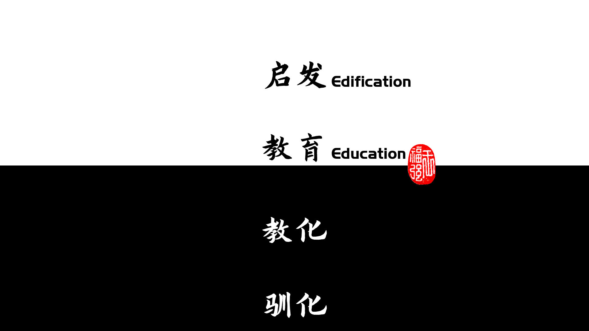

或许我们并不知道什么是真正的教育！
王福强
2022-06-18既然经常被人称为“王老师”或者“扶墙老师”，作为老师，我觉得有义务说一下个人对教育的看法。高考之后，每年学校里都会“开展扔书撕书活动”，如果我们了解了这个事情的底层逻辑，那么这种现象也并非什么难以理解的事情。
我认为教育分四个层次，简单绘图如下：

如果把教育（英文对应Education）作为水平线的化，那么，教育之下还有两层，教育之上则至少一层。
就像谈到管理，我们会经常讲“管理是要激发人/员工的善意”， 谈到教育，我认为教育就是发掘和启发人的潜能。
理想与现实往往都是两极分化。
理想情况下， 教育只能算基础水平，教育之上的启发（教育）才是最好的（英文对应Edification）。
现实却是，很多所谓的教育，往往只是披着教育的皮，做着教化的事情，甚至还有把人当动物一样的驯化的事情。
所以， 作为整个图景中的实体， 被教育者最好自己能够觉醒，知道自己要什么样的教育，否则，有人掏钱，有人做事，但最终会为你好吗？ 自己想想。
个人对于教育的态度，基本上总结如下：